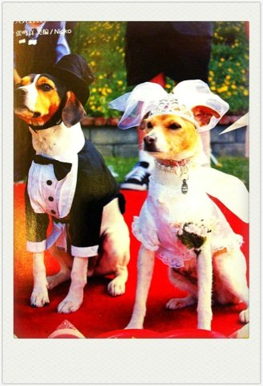

《那些年，我们年一起追过的女孩》看了
那些年，我暗恋的男生，不对，是全班都知道的我喜欢却不喜欢的那个男生...
同一所小学，那群男生在操场上踢足球，我一眼看到了他...我们放学的时候走的是同一条路，那时我们还不认识,我只是默默...
我们考进同一所中学，同班，他坐在我前一排，那一天看到他走进教室，我的心脏第一次开心到乱了节奏...
每天除了写作业就是要写他的名字，在书上写，纸上写，手上写...
中学第三年他转学去了足球学校...他的学校里我很远，那时身上的零花钱还不够打出租车...
我居然会因为想念他而逃课，记得那天换了两辆公交车又走了好久好久的路东问西问终于找了那所足球学校，只为在校门口看他一眼...
... ... 那些年...那写美好的回忆...
